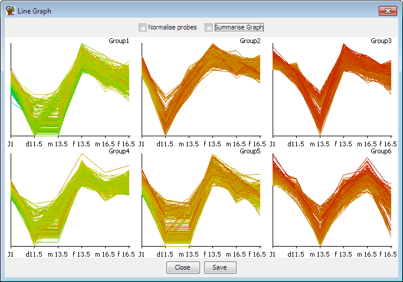

The line graph is a way to look at the pattern of quantitation of a set of probes over the currently visible data stores. It is an easy way to visually assess the consistency of replicates, or look for gradual trends which occur over a set of stores.

You can choose to show data for only the currently active probe list, or you can select a set of probe lists and draw line graphs for each of them. The data stores shown will be those which are currently visible in the chromosome view. Only quantiated data stores can appear in the graph, so any stores which are not quantitated will be silently dropped from the plot.
The default view plots the range of values as they appear in the current quantiation. One option to clean up the graph is to apply a per probe normalisation to the graph. In this case the plot for each probe is stretched so its dynamic range runs from the bottom to the top of the plot window. This has the effect of emphasising the changes between conditions whilst ignoring the magnitude of the differences. If you want to look at aligned profiles whilst keeping the magnitude differences then you should look at the per-probe normalisation option in the data quantitation.
In some cases you will have so many probes that the plot becomes cluttered and it's not clear what the overall trend of the group is. In this case you can choose the 'summarise graph' option. Instead of showing the individual traces this will show only the mean value for each data store, along with error bars indicating the 95% confidence interval for the measure.